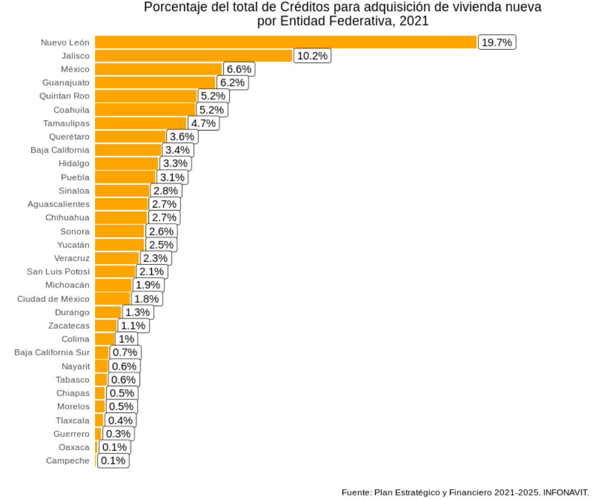

A inicios de año generé un pequeño hilo de Twitter sobre como aprovechar tablas provenientes de un *.pdf en nuestros análisis de #rstats.
Pues bueno, igualmente para mi primer hilo del año voy a re-crear este hilo de @claudiodanielpc pero usando #RStats https://t.co/gifEKbJ9v3
— Juvenal (@JuvenalCamposF) January 8, 2021
Sin embargo, como generalmente los hilos de Twitter son vanos y se olvidan con el tiempo, he decidido generar una entrada de blog para tener el código a la mano para futuros trabajos y, de esta manera, no estar googleando mis hilos cada vez que necesite sacar información de tablas en *.pdf. Igualmente, tener la entrada de blog permite que otros usuarios puedan también acceder a este contenido de manera más fácil.
En mi hilo quise puntualizar algunos aspectos de la extracción de tablas a través de códigos en #rstats:
- Primero, la librería
tabula, otabula-pyes una librería de Python que es un wrapper de una librería de Java que también se llama tabula. En R también existen estas librerías wrapper, y, en este caso, la librería se llama[tabulizer](https://cran.r-project.org/web/packages/tabulizer/vignettes/tabulizer.html).
- Para poder utilizar estas librerías basadas en Java se requiere bajar a nuestra sesión de R la librería
rJavay, obvio, tener una distribución deJavainstalada en tu computadora… …O [en su defecto] usarRStudio Cloud, que es comoRStudio, pero en la nube y sin problemas de librerías.
Otras librerías que igualmente usan Java son
mailR(la que utilizo para mandar correos automatizados) oRSelenium(para hacer tests de p{aginas web o web scraping con usuarios automatizados). Una de las cosas que descubrí re-haciendo el proceso de extracción de datos es que es muy complicado instalar librerías que dependen de Java en computadoras Mac con procesador M1. Por lo mismo, si planeas utilizar una de estas librerías (o si decides seguir este mini-tutorial) te recomiendo que no lo intentes desde una de estas nuevas Mac.
Muchas veces nos vamos a ver en la necesidad de extraer datos en *.pdf; ya sea porque es la única manera en que podemos encontrar la información, porque las personas que se encargan de proporcionarnos los datos de interés no conocen la conveniencia de presentar sus datos en formatos abiertos o quizá por el simple hecho de que quieren ser malos con nosotros y ponernos dificultades para realizar análisis a partir de sus datos.
En esta entrada de blog vamos a ocuparnos del caso menos malo posible: el caso en el que alguién pasó un archivo de Word a PDF con tablas en el. Estos archivos tienen la ventaja de que respetan cierta estructura y esto permite que la extracción de información sea más sencilla.
Para esta labor, vamos a extraer datos del Plan estratégico y financiero 2021-2025 de Infonavit, el cual es un documento que trabajó el buen @claudiodanielpc en un hilo parecido al mío, desde el cual extrajo los mismos datos, pero haciendo el proceso en Python.
Primero, instalamos la librería tabulizer:
# Instalamos tabulizer
install.packages("tabulizer") # Para instalar tabulizer en mi compuSegundo: Llamamos a las librerías y guardamos la ubicación del archivo del Plan estratégico y financiero 2021-2025 de Infonavit:
# Librerias ----
library(tabulizer) # Para leer tablas en pdf
library(tidyverse) # Para manipular datos
# # Obtenemos la url del Plan del INFONAVIT
url <- "/home/juvenal/Descargas/Plan_Estrategico_y_Financiero_2020-2024.pdf"
# url <- "https://portalmx.infonavit.org.mx/wps/wcm/connect/67e528e7-f13d-4dbf-a668-b29a594351c3/Plan_Estrategico_y_Financiero_2020-2024.pdf?MOD=AJPERES&CVID=mYkHiU3"Tercero: Ya que tenemos la dirección de nuestro archivo, ahora extraemos los datos que nos interesan. En este caso, queremos los datos de la Tabla 29: Programa operativo Anual 2021 por estado, que se encuentra en la página 113.
# Extraemos la tabla de la página 113
tab <- extract_tables(url,
pages = 113,
method = "stream")Cuarto: Ya con los datos extraídos dentro del objeto tab, aprovechamos los patrones de su estructura para poder darles una forma de tabla estructurada.
En el último paso, vamos a romper la columna 6 para dividirla en 4 columnas adicionales a partir de los espacios guardados en cada celda.
# Generamos la tabla:
matriz <- tab[[1]] %>% # Nos quedamos con la tabla
as.tibble() %>% # Convertimos a tibble
filter(V1 != "") %>% # Filtramos los renglones en blanco
slice(-1) %>% # quitamos el primer renglón
separate(V6,
into = c("V6", "V7", "V8", "V9"),
sep = "\\s") # Separamos la columna 6 en 4 columnas masAhora, vamos a renombrar las columnas a los nombres que vienen en el documento original.
# Le metemos los nombres personalizados (que signifiquen algo para nosotros)
names(matriz) <- c("Entidad",
"Nueva",
"Existente",
"No Hipotecarios",
"Total",
"Infonavit",
"Entidades Financieras",
"No-hipotecarias",
"Total (Derrama de Crédito)")
# Convertimos las columnas a numero
matriz[,2:9] <- lapply(matriz[,2:9], function(x){
x %>%
str_remove_all(pattern = ",") %>% # Le quitamos las comas
as.numeric() # Lo convertimos a numero
})Y ya, finalmente armamos la gráfica utilizando código de ggplot().
# Armamos las grafica de porcentaje de créditos por entidad:
# Generamos la base de datos a graficar
bd_plot <- matriz %>%
select(Entidad,Nueva) %>%
filter(Entidad != "Nacional") %>%
mutate(Pctje = 100*Nueva/sum(Nueva)) %>%
arrange(-Pctje)
# Hacemos la gráfica
bd_plot %>%
ggplot(aes(x = reorder(Entidad, Pctje), y = Pctje)) +
geom_col(fill = "orange") +
coord_flip() +
geom_label(aes(label = paste0(round(Pctje,1), "%")),
hjust = -0.05) +
scale_y_continuous(expand = expansion(c(0,0.3), 0)) +
labs(y = "", x = "",
title = "Porcentaje del total de Créditos para adquisición de vivienda nueva\npor Entidad Federativa, 2021",
caption = "Fuente: Plan Estratégico y Financiero 2021-2025. INFONAVIT. ") +
theme_minimal() +
theme(plot.title = element_text(hjust = 0.5),
panel.background = element_blank(),
panel.grid = element_blank(),
axis.text.x = element_blank())
Finalmente, concluí el hilo con el siguiente mensaje:
Y listo. Con este hilo, quiero mostrar que muchas de las tareas sencillas de esto del manejo de los datos se pueden hacer de manera sencilla tanto en #Rstats como en #Python, y que los pasos son prácticamente los mismos, solo cambia la sintaxis. :P Ese es todo el hilo. Si andan sin quehacer y quieren repasar sus conocimientos de importar tablas de
dplyro de hacer gráficas de barras en R, en este enlace esta el código completo:
https://github.com/JuveCampos/juveBlog/blob/master/tabula/recreandoTablaDanielPC.R
¡Saludos!
–Juvenal